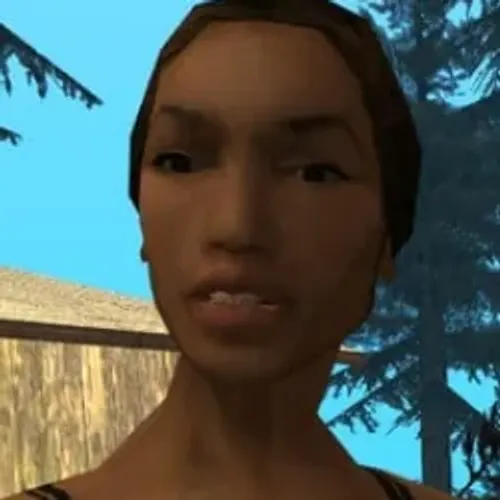

Galería de Cartas
Participante: Santiago Olive
Participante: Bruno Casanova
Participante: Benjamin Correa
Participante: Benjamin Chesak
Participante: Thiago maya

Big Smoke
Big Smoke es uno de los personajes más conocidos de Grand Theft Auto: San Andreas.
Su nombre real es Melvin Harris y forma parte de Grove Street Families, junto con CJ, Sweet y Ryder.
Se caracteriza por ser una persona divertida, habladora y bastante ambiciosa. También es famoso por
su gran apetito y por algunas frases y escenas que se volvieron muy populares entre los jugadores.
A lo largo de la historia, Big Smoke tiene una relación cercana con CJ y los demás miembros de Grove
Street. Sin embargo, sus decisiones y su deseo de obtener poder y dinero hacen que su papel en la
historia cambie considerablemente. Es uno de los personajes más importantes de la trama y participa
en varios momentos clave del juego.
.jpg)
CJ
CJ es el personaje principal de Grand Theft Auto: San Andreas.
Su nombre real es Carl Johnson y forma parte de Grove Street Families, junto con Big Smoke, Sweet y Ryder.
Se caracteriza por ser un joven ambicioso, leal a sus amigos y dispuesto a hacer lo que sea necesario para proteger a su familia.
A lo largo de la historia, CJ tiene que lidiar con diversos desafíos, incluyendo conflictos con pandilleros en Los Santos y la persecución por parte de las autoridades. Su papel en la trama es fundamental, ya que sus decisiones afectan el desarrollo de la historia y el destino de los personajes que lo rodean.

Franklin Clinton
Franklin Clinton es uno de los tres protagonistas principales de
Grand Theft Auto V. Vive en Los Santos y al comienzo de la historia
trabaja recuperando vehículos para un concesionario de autos.
Franklin busca alejarse de la vida de delincuencia callejera y
encontrar una oportunidad para conseguir una vida mejor.
A lo largo de la historia conoce a Michael De Santa, quien se
convierte en una especie de mentor para él y lo introduce en robos
mucho más importantes. Franklin se caracteriza por ser ambicioso,
inteligente y tener grandes habilidades para conducir, participando
en algunos de los golpes más importantes del juego.

Catalina
Catalina es uno de los personajes más importantes de Grand Theft Auto: San Andreas.
Es una mujer impulsiva, agresiva y muy ambiciosa, conocida por su personalidad
explosiva y por su comportamiento impredecible. Es prima de César Vialpando y
tiene una relación complicada con Carl "CJ" Johnson.
A lo largo de la historia, Catalina participa junto a CJ en varios robos y
negocios ilegales. Sin embargo, su relación con él termina mal debido a su
personalidad y a sus constantes conflictos. Más adelante, Catalina se relaciona
con Claude, el protagonista de GTA III, conectando de esta manera ambos juegos.

Ryder
Lance "Ryder" Wilson es un miembro de Grove Street Families
en Grand Theft Auto: San Andreas. Es amigo de CJ y participa
en varias misiones durante la historia.
Se caracteriza por su personalidad rebelde, su sentido del humor
y su relación con los demás miembros de Grove Street.